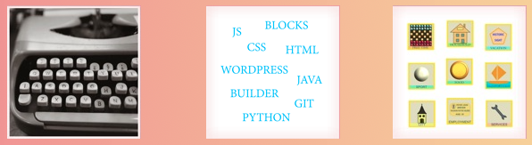

Začala som sa učiť programovacie jazyky ako Java, Python, JavaScript.
Java je dobrý základ pre učenie sa programovania pre operačný systém Android aj pre webové stránky.
Python sa používa na programovanie umelej inteligencie aj na tvorbu webových stránok.
JavaScript sa používa na tvorbu interaktívnych webových stránok.
Tento kurz som absolvovala online. Naučila som sa základy.
Nastavenie nového dokumentu, importovanie obrázka na pozadie kresby,
práca s vrstvami, krivky a štetce,
kresba jednoduchých tvarov a kreslenie tvarov pomocov nástrojov,
export do rôznych formátov.
Toto a ešte viac využívam v programe na kreslenie a úpravu fotogracií: Affinity Designer and Photo.
Tiež sa učím ako vytvoriť dizajn pre web v tomto programe.
Zapojila som sa do akcie s názvom IT Blogger. Napísala som články a recenzie o software.
Absolovovala som kurz Základy WordPress od Wpress.
Niečo nové som sa naučila a niečo som si zopakovala.
Založila som si účet na profilovej stránke Gravatar.
Vytvorila som svoju prvú webovú stránku postavenú na WordPress CMS s meninovými pohľadnicami.
Tiež som začala vytvárať mobilné aplikácie pre Android. Sú pekné a fungujú na Androide 7/12.
Môžete si nejaké voľne stiahnuť alebo si niečo prečítať o mojich začiatkoch.
Angličtina (B1), Čeština (C1), Slovenčina (C2)
MS Windows 7/10, Apple Mac OS, MS Office, Apple Keynote/Pages
WordPress, Komodo IDE, GitHub, Affinity Designer
Štátna skúška zo strojopisu; Obchodná korešpondencia
inštalácia softwaru, testovanie jeho funkcií, písanie recenzií
zodpovednosť, samostatnosť, ochota učiť sa nové veci, technické myslenie
hudba, čítanie, príroda